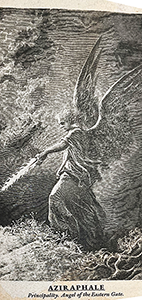
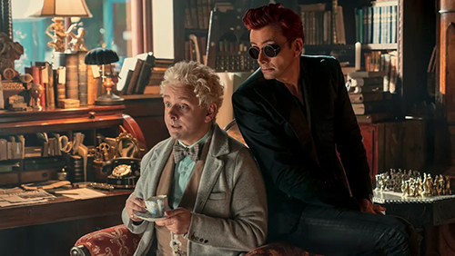
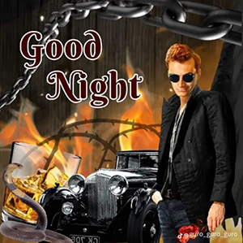

˚₊‧꒰ა ☆ ໒꒱ ‧₊˚
Aziraphale

Principality, Angel of the Eastern Gate, Guardian of Eden

Good Omens is a book made by the authors Terry Pratchett and Neil Gaiman, though it's important to note that Pratchett was the one who wrote the majority of the novel. Since then there's been many different adaptations for the book. In 2019 on Amazon Prime the Tv-Series was released, and came to a conclusion in 2026. There was an unnoficial Musical created as well, and finally the radio drama released onto BBC. All of the versions have different interpretations for the character's and sometimes even add in new ones! However, for this project I will be focusing only on the Television version of the angel Aziraphale.
This fantasy show follows an angel, Aziraphale and a demon, Crowley in their unlikely friendship throughout the ages until Earth is faced with Armageddon. Forcing the two to team up and work together in order to save the world from destruction. Even after stopping Armageddon in Season one, the threat still prevails as Heaven and Hell are desperate to go to war. When at the end of season two it's revealed there are plans for the Second coming, setting up the end of the world again for season three.

In season one we are introduced to the otherworldly duo, starting out in Eden after the serpent Crowley tempted Adam and Eve. Aziraphale shows Crowley kindness as he shields him from the rain with his wing, which is what leads to them becoming friends as they constantly run into each other through the ages. However Crowley was tasked with delivering the Antichrist to his human parents, setting up the motion for Armageddon to happen once the boy turns eleven. The two decide that in order to avoid it they have to raise him with angelic and demonic influences. However, there was a mixup with the children and they end up taking care of the wrong boy. Leaving the real Antichrist to be raised only with human influences. At the end of this season with the help of Aziraphale and Crowley the Antichrist refuses to cause the Earth's destruction. Instead wanting to keep living a normal life as a boy, with his friends and his dog. Due to Aziraphale and Crowley playing such a big role in this their respective sides see them as traitors.

In this season, Aziraphale's old boss, the Archangel Gabriel, goes missing from Heaven. Though in reality, he showed up to Aziraphale's book shop, his memories erased the only thing he knew was that he felt compelled to go to Aziraphale. Much to his dismay, the angel hides his old boss and recruits Crowley to help him. Aziraphale tries to figure out the mystery of why Gabriel's memories got erased while trying to hide the man. The angel and demon end up performing a miracle together, strong enough that it sent alarm bells off in Heaven so while trying to investigate they have to come up for an excuse of why they used so much magic. Settling on the idea that they tried to make two side character's fall in love. Overall this season is very sweet and romantic. Though it has a tragic ending, just when Aziraphale and Crowley find out that Gabriel's memories were erased as a result of no longer wanting Armageddon to take place. They find out even more information that it was because he was in love with Crowley's old boss, Beelzebub. This leaves heaven without an Archangel, which makes the Mettatron, the voice of God, seek out Aziraphale to be the new one. Convincing the angel that he could appoint Crowley to become an angel again and they could work together. When Aziraphale brings this up to Crowley they argue, which ends in a desperate kiss from the demon in an attempt to make Aziraphale stay. The season ends with Aziraphale leaving to go back to heaven, glancing back at Crowley one last time before he steps into the elevator.
In season three, we see Aziraphale as the new Archangel. It's his job to ensure that the second coming happens and that Jesus goes down to Earth to end the world. However the archangel Michael gets a hold of the book of life and starts to erase everyone from it, slowly becoming mad. Crowley and Aziraphale end up being the only one's alive and they make their own book of life, creating God before them and asking her to make a Godless universe. That way humans get a proper chance to live. However it erases them from existing entirely which was why so many fans were outraged. The show ends with a human version of Aziraphale and Crowley meeting and eventually getting married and growing old together in a cottage in South Downs. This ending was shocking to viewers and was not recieved well.

I like to pretend this ending isn't canon, it disapointed myself and many other fans. It led to a lot of people leaving the fandom entirely. Howwever I am very greatful to the cast and the team for trying to create an ending for us, even though Prime tampered with the ending and took away creative control from the Pratchett Estate. They did the best with what they had and while it didn't give us a preferable result, endings like these are exactly why fandom is so important. Because from here we can create the ending into something of our own so we can be satisfied. In my mind the show ended very differently, I like to think Aziraphale and Crowley get to remain unaging, staying by one another for eternity while no longer having their otherworldly powers. I believe they live in the South Downs cottage with their Bently parked safely in the driveway. Getting to lie amongst the humans like they loved so much, watching as humanity goes through its future twists and turns. I wanted them to find peace, not for their world to be erased entirely.
Aziraphale is an angel, his purpose on Earth was to guard the garden of Eden. However, he is different from other angels because of his love for humans which gives him compassion that so many of the other ethereal beings lack. The other angels see his care for the human's as weakness, often berrading him for taking part in their food, or literature. He is very passionate about reading, owning his own bookshop, where he refuses to sell any books because of how much he cherishes them. He has so much empathy that a lot of fans misunderstand. He is a naive character and we are shown many times how other's will use this against him, the only person who doesn't is Crowley. In fact the demon finds him rather clever. Another thing that is very dear to the angel is his friend. Crowley has been with him since they were angels, meeting as they made a nebula together and meeting again in Eden. My favourite way they describe Aziraphale is iin the book when they say he is "Gayer than a treeful of monkey's on nitrous oxide."

Crowley is Aziraphale's best friend, their relationship often being thought of as lover's by other character's because Crowley calls Aziraphale "angel" more often than by name. In the show their feelings are made canon as season two ends and Crowley tries to confess his feelings when the angel tries to convince him that they need to return to Heaven. This ends with a kiss between the two. However season three, with their human versions getting married. To most people Crowley is cold or mean but not to the angel. They are on their own side and keep each other from being lonely.